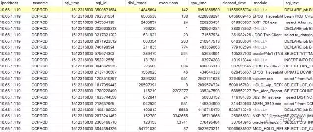
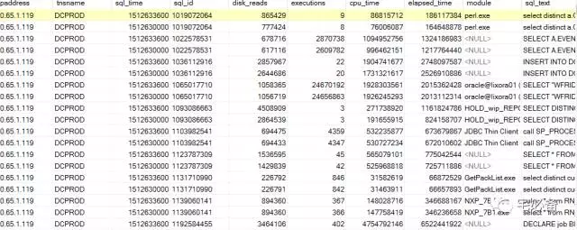
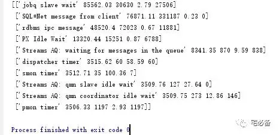
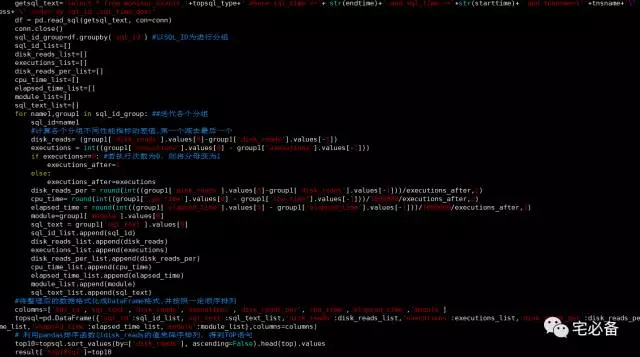

使用pandas处理数据获取TOP SQL语句
2017-12-08 Oracle 宅必备
这节讲如何使用pandas处理数据获取TOP SQL语句
开发环境
操作系统:CentOS 7.4
Python版本 :3.6
Django版本: 1.10.5
操作系统用户:oms
数据处理:pandas
前端展示:highcharts
上节我们介绍了如何将Oracle TOP SQL数据存入数据库
接下来是如何将这些数据提取出来然后进行处理最后在前端展示
这节讲如何利用pandas处理数据来获取TOPSQL语句
TOP SQL获取原理
通过前面的章节我们获取了每个小时v$sqlare视图里面的数据，这里我以monitor_oracle_diskreads 为例，具体数据如下图

上面的排序是没有规律的，我们首先通过SQL语句查询出指定的数据库在15:00至16:00中所有SQL语句,并按照sql_id和sql_time降序排列(时间采用时间戳的形式)
select * from monitor_oracle_diskreads where sql_time <= 1512633600 and sql_time >= 1512630000 and tnsname='DCPROD' and ipaddress='10.65.1.119' order by sql_id ,sql_time desc

由于我选择时间段间隔一个小时，所以上面查询结果每个sql_id对应两行数据，其中16:00的数据在上面一行
接下来我们要pandas做的事情就是计算每个sql_id对应的disk_reads等栏位的差值，具体步骤如下:
-
SQL_ID进行分组
-
历各个分组，将各个组的第一个值减去最后一个值，将结果放入列表中供后续使用，这里注意一点，由于后面我们要计算平均每次的值，会有分母为零的状况，所以这里先做判断如果执行次数为0则将分母变为1
-
将整理后的结果格式化成pandas的DataFrame格式
-
用pandas排序函数以disk_reads的值来降序排列，得到TOP语句
运行结果
如下为运行后的结果，这里以topevent为例，可以看到为一个列表，里面在嵌套一些列表，这种结果就是我们需要的格式

下面为程序的截图:

源代码位置
欢迎访问我的github主页查看源码
https://github.com/bsbforever/oms_django
下节为如何讲如何在前端显示